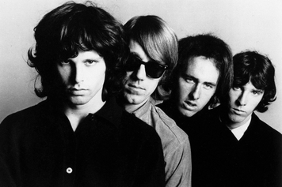

 The Doors were an American rock band formed in Los Angeles in 1965, with vocalist Jim Morrison, keyboardist Ray Manzarek, guitarist Robby Krieger, and drummer John Densmore. They were among the most controversial and influential rock acts of the 1960s; mostly due to Morrison's lyrics and voice, along with his erratic stage persona, and the group was widely regarded as an important part of the era's counterculture.[4] The band took its name from the title of Aldous Huxley's book The Doors of Perception, itself a reference to a quote by William Blake. After signing with Elektra Records in 1966, the Doors with Morrison released six albums in five years, some of which are considered among the greatest of all time,[5] including The Doors (1967),[6] Strange Days (1967),[7] and L.A. Woman (1971).[8] They were one of the most successful bands during that time and by 1972 the Doors had sold over 4 million albums domestically and nearly 8 million singles.[9] Morrison died in uncertain circumstances in 1971. The band continued as a trio until disbanding in 1973.[10][11] They released three more albums in the 1970s, two of which featured earlier recordings by Morrison, and over the decades reunited on stage in various configurations. In 2002, Manzarek, Krieger and Ian Astbury of the Cult on vocals started performing as "The Doors of the 21st Century". Densmore and the Morrison estate successfully sued them over the use of the band's name. After a short time as Riders on the Storm, they settled on the name Manzarek–Krieger and toured until Manzarek's death in 2013. The Doors were the first American band to accumulate eight consecutive gold LPs.[12] According to the RIAA, they have sold 33 million albums in the United States[13] and over 100 million records worldwide,[14] making them one of the best-selling bands of all time.[15] The Doors have been listed as one of the greatest artists of all time by magazines including Rolling Stone, which ranked them 41st on its list of the "100 Greatest Artists of All Time".[16] In 1993, they were inducted into the Rock and Roll Hall of Fame.